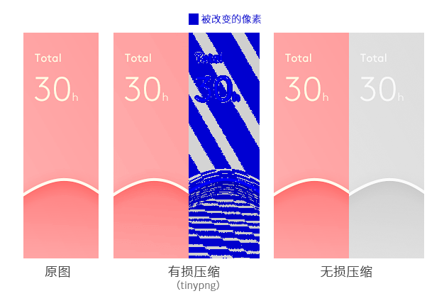
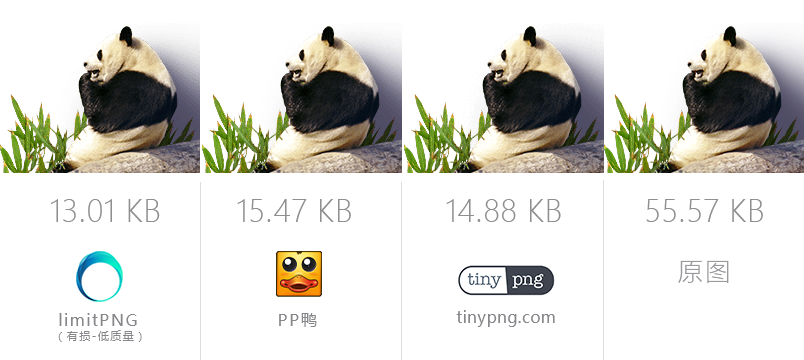

无损压缩 不改变任何像素的安全压缩
limitPNG 支持无损压缩和有损压缩两种压缩方式，其中无损压缩是不损失任何画质的压缩方法，与有损压缩相比（如 tinypng），虽然体积没优势，但是在对品质有要求的生产环境中不改变原图任何一个像素是必须的
而在无损压缩工具中，即使比起公认无损压缩率最高的工具： PNGGauntle 和 scriptPNG ，limitPNG 仍能压缩的比它们压缩的更小：

| 排名 | 文件名 | 大小 | 减少大小 | 减少比例 |
|---|---|---|---|---|
| 原图 | 网站图片-1.png | 11.19 KB (11460 B) | ||
| 1 | 网站图片-1 [limitPNG].png | 7.71 KB (7898 B) | 3.48 KB (3562 B) | - 31% |
| 2 | 网站图片-1_[scriptPNG].png | 8.13 KB (8325 B) | 3.06 KB (3135 B) | - 27% |
| 3 | 网站图片-1_[PNGGauntle].png | 8.13 KB (8325 B) | 3.06 KB (3135 B) | - 27% |
| 4 | 网站图片-1_[Caesium].png | 14.96 KB (15319 B) | -3859 B (-3859 B) | + 33% |
| 排名 | 文件名 | 大小 | 减少大小 | 减少比例 |
|---|---|---|---|---|
| 原图 | 网页 banner_1.png | 330.63 KB (338566 B) | ||
| 1 | 网页 banner_1_[limitPNG].png | 279.99 KB (286711 B) | 50.64 KB (51855 B) | - 15% |
| 2 | 网页 banner_1_[PNGGauntle].png | 282.76 KB (289547 B) | 47.87 KB (49019 B) | - 14% |
| 3 | 网页 banner_1_[scriptPNG].png | 287.16 KB (294053 B) | 43.47 KB (44513 B) | - 13% |
| 4 | 网页 banner_1_[Caesium].png | 389.40 KB (398746 B) | -60180 B (-60180 B) | + 17% |
有损压缩 损失图片质量的暴力压缩
虽然有损压缩会损失画质，但是一些场合对画质要求并不高，而有损压缩能减少更多的体积。limitPNG 也支持有损压缩模式，并且相对于同类工具（tinypng、PP鸭、pngyu 等），limitPNG 有更多画质选项，可以更灵活的在画质和尺寸间取舍。 当然压缩效果也毫不逊色：
